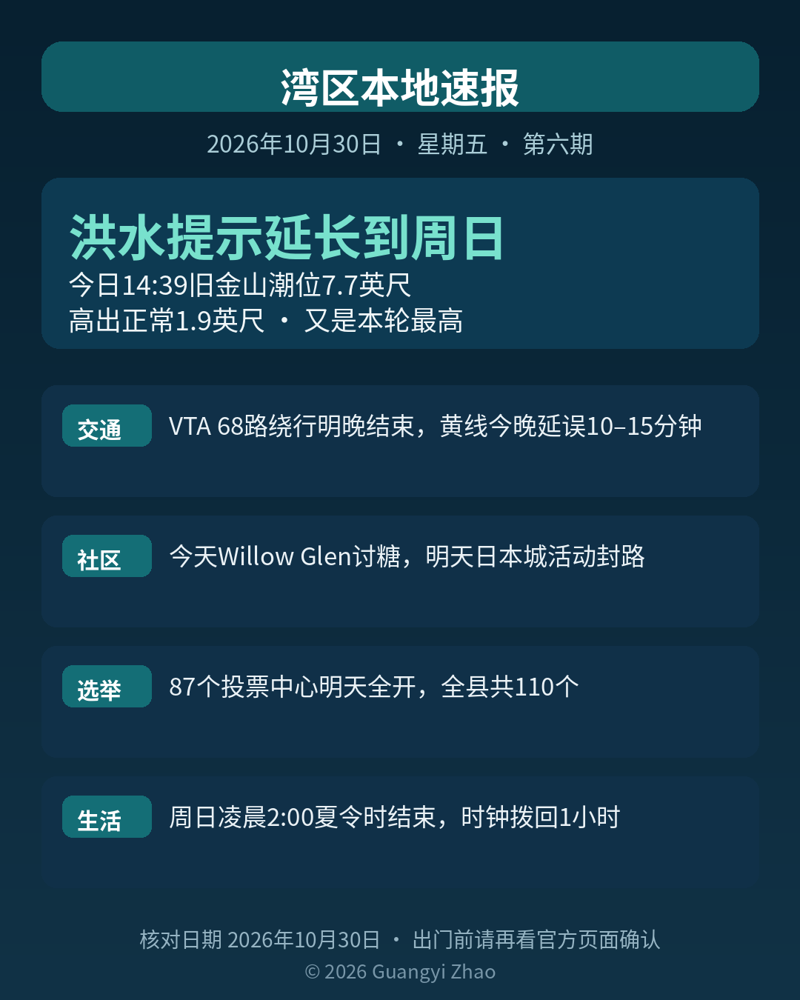

《湾区本地速报》第六期，2026年10月30日，星期五，五条本地新闻：
主打天气：国家气象局已经把沿海洪水提示延长了。湾岸线一带管到周日（11月1日）下午6点，低洼地带漫水最高1.9英尺，太平洋海岸段管到周六下午6点。今天下午2:39，旧金山潮位7.7英尺，高出正常1.9英尺，又是本轮最高；周六下午3:44潮位7.3英尺，周日下午3:59潮位6.8英尺，逐日回落。马林县湾岸影响最明显。开车别绕路障，别进深浅不明的积水。
交通两条：VTA 68路在 Morgan Hill 因 Upper Llagas 防洪工程绕行，改走 Old Monterey Rd、Llagas Rd 一带，到明晚（10月31日）11:59结束，绕行沿线招手可以停。BART 黄线今晚是这一轮单线施工的最后一晚，Pleasant Hill 到 Concord 之间深夜单线通行，零点起延误10到15分钟，赶末班车请留出余量；下一轮施工是11月2到6日。
社区提醒：今天 Willow Glen 的 Lincoln 大道有分时段讨糖活动，上午11点到12点半是幼儿场，下午3点到4点半是学龄场，周边人多车多。明天万圣节当晚，圣何塞日本城下午4点到7点有节庆活动，附近街道封闭、停车位紧，主办方建议坐公交或拼车前往。
选举提醒：圣克拉拉县余下87个投票中心明天（10月31日）全部开放，全县共110个，每天上午9点到下午5点，选举日（11月3日）上午7点到晚上8点。Milpitas Library 那个点时间不同，是上午10点到下午6点。全县111个官方选票投递箱24小时开放，最后一周交票请优先用投递箱或投票中心，别再等邮寄。
生活提醒：本周日（11月1日）凌晨2点，夏令时结束，时钟拨回一小时，回到凌晨1点。当晚能多睡一小时，但天黑会明显提早。周日傍晚开车、接孩子请留意光线变化，家里的老式挂钟和车载时钟记得手动调回。
来源：国家气象局旧金山办公室 Coastal Hazard Message（2026-10-29 15:10 PDT 延长报文） · VTA 官网 Service Alert（68路绕行） · BART 官网通告（黄线单线施工） · San Jose Taiko 官网（日本城万圣节） · Houseberry 圣何塞儿童万圣节指南 2026（Willow Glen 时段） · 圣克拉拉县新闻中心 2026-10-26（投票中心） · 圣克拉拉县选举官官网（Milpitas Library 时段例外） · USA TODAY 2026-10-29（夏令时）
数字证据说明：洪水提示、VTA 绕行、BART 施工与投票中心为 A 级（官方原文）；Willow Glen 讨糖时段与夏令时为 B 级（本地指南称经主办方页面确认／可靠媒体当日报道）。
《湾区本地速报》为《代码与诗篇》新闻矩阵第 8 档，每日早上更新。播报版（音频/视频）同日发布于 YouTube「Ezra Daily 每日速报」。© 2026 Guangyi Zhao